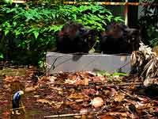
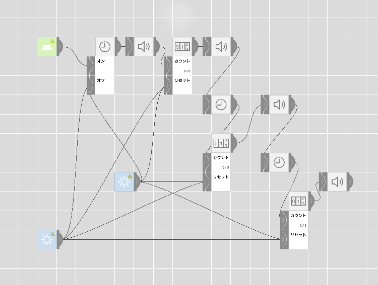

Home
6月1日
今日の成果
photoshopを使用して画像の加工

ツールを使用して油彩風にすることや切り取って貼り付けること
切り取る時は輪投げツールを使用して選択する
コピースタンプツールを使用して、猫を二匹に増やした
他に書き出しでファイルの圧縮 解像度の変換 また
他にはコントラストの調整や 色彩反転などをした
6月6日
今日の成果
動画の作成
動画と音楽を繋ぐことはできた。けれど
なかなか思うように音楽を貼り付けることができなかった
動画の挿入はできたが、しかし音楽を同期させることがうまくできなかった。
それに加えてなかなか、youtube用への書き出しがうまく行かなかった
もうちょっとうまくできるようにしていきたい
CAD
まず、釘の上の部分の直径をノギスで測り
CADにまずスケッチで円を描く
次に、押し出しで斜めになったいるところまで押し出す
その次に、釘の長さまで押し出しで伸ばす
そのあとに釘の先端を傾斜平面を使用してあたりをつける
その後分割を使って切る、その後レイヤーを見えなくする。
MESH
目覚まし時計
僕たちは趣味としてよく夜更かしをしてしまうことが多く、
朝が起きずらいというところから
目覚ましを作れないかと思った
夜更かしをしているため簡単に起きることはできず
ただの目覚ましでは起きれない
なので、一回で消えず二回でも消えない起きるまで
エンドレスな目覚ましを作ろうと思った
けれど、ループができず苦戦した。
その後、自分が使うという観点から他人に使って
起こしてもらうという目的にシフトして組み直した

このように、カウント形式にして５秒ごとに不快音がなる
それが3回繰り返されたらまた別の音がなる仕組みになっている
繰り返しを止めるには明るさセンサーのセンサー部分を
ふさぐか、塞ぐことを止めることでとまる
これは、他人に使ってもらうことが前提の装置なので
自分が起きたくなくてセットしなくてもボタンを
押しさえすれば鳴り出すし、また鳴る音も不快な電子音なので
たぶん起きることができると思う